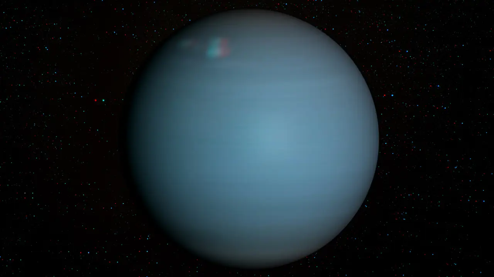

Urano é o sétimo planeta a partir do Sol o terceiro maior e o quarto mais massivo dos oito planetas.

O Telescópio Espacial James Webb capturou recentemente uma imagem impressionante de Urano, destacando seus anéis e características atmosféricas.

Urano é o sétimo planeta do Sol e foi o primeiro descoberto com telescópio. É um gigante gelado, com atmosfera muito fria, composta por hidrogênio, hélio, metano e outros gelos. Gira de lado, com o eixo quase deitado, o que causa estações extremas. Possui anéis, luas e ventos fortes de até 900 km/h. Embora pareça sem detalhes visíveis, mostra mudanças sazonais com o tempo.